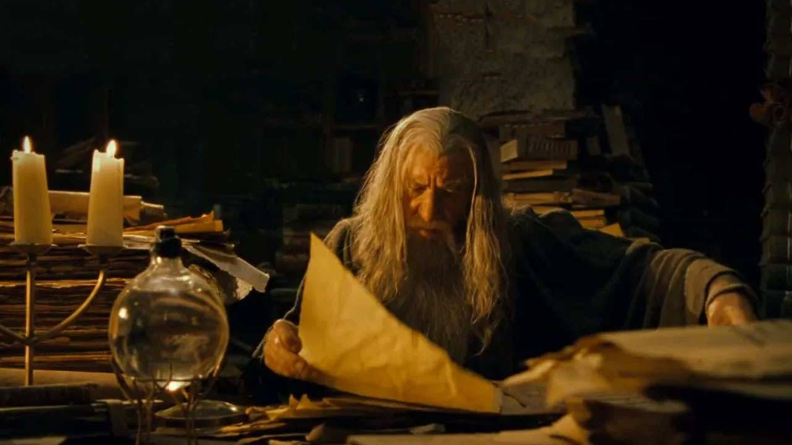

Libraries
You can experience the entire journey from the colorful world of the Children's Library to the mature wisdom of the Manuscript Library in different libraries of İstanbul Public Library.

Youth Library
The Youth Library, designed specifically for middle and high school students, supports young people in their daily studies and school exams with an extensive collection of useful educational resources for students and a comfortable working environment.
Adult Library
The Adult Library is designed to meet the needs of all adult users, especially undergraduate and graduate students, scholars and researchers. Featuring reading and study halls that are open around the clock, the Adult Library provides a comfortable and quiet work environment.

Manuscripts Library
With the intention of offering ancient knowledge for deployment in new research - and passing it on to future generations - the Manuscript Library features manuscripts catering to readers and researchers.
Special Libraries
Featuring extensive collections and access to secondary sources, the Special Libraries are designed mainly for academic research. Collections in the Special Libraries meet a variety of needs for all users - from the curious reader to the researcher seeking specific interdisciplinary resources.